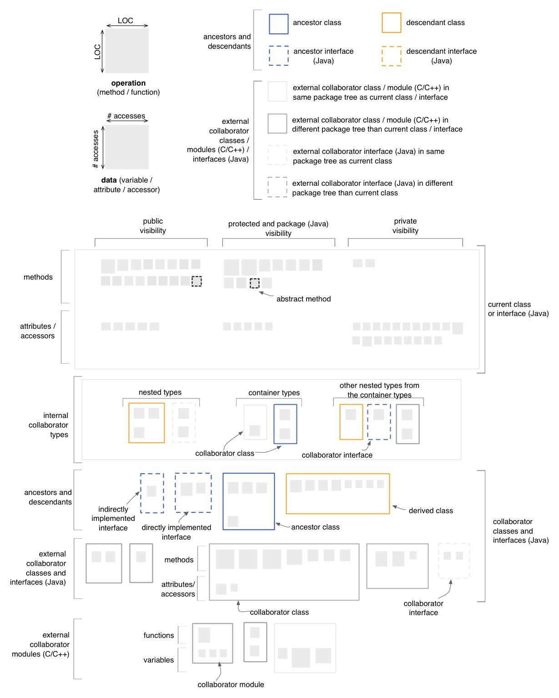

Class Map
The Class Map shows the internals of a single class or interface
(Java), along with its inheritance hierarchy and collaborators.
Entities and Layout
The layout of the Class Map consists of a series of layers, as shown in
the figure below:
- the first layer from the top represents the current class /
interface. This layer is divided vertically in two areas corresponding
to methods and data, as well as horizontally into three areas,
corresponding to public, protected or package-level members, and
private members.
- the second layer contains internal collaborators. These internal
collaborators include: nested types (i.e. types defined inside the
current class), container types (i.e. types that the current class may
be nested inside of), and other nested types that belong to any of the
container types.
- the third layer is dedicated to all ancestors and descendants of
the current class / interface. These ancestors and descendants are
ordered based on their DIT metric value.
- the fourth layer contains external collaborator classes and
interfaces. These external collaborators are not part of the same
inheritance hierarchy as the current class or interface.
- the fith layer is shown only for C and C++ systems contains
external collaborator modules (files containing global functions and
variables)
Note that each class, interface or module, showing up in layers two to
five, is represented as a rectangle that contains two sub-regions of
smaller rectangles, denoting operations and data respectively.
Interfaces are rendered using a dotted border. Unlike in the case
of Package Maps and Inheritance
Maps, the sizes of
the rectangles representing classes, interfaces and modules are not
linked to any particular
metric. These rectangles merely act as containers for the enclosed
operations and data. However, the sizes of the squares representing
operations and data are given by the LOC
metric (for operations) and by
the total number of accesses (for data).

Quality perspectives
Cohesion, Complexity,
Coupling, Design
Flaws, Encapsulation, Inheritance
Metrics used
DIT (indirectly), LOC